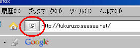

アクセスアップの方法はいくつかありますが、芸能関係のブログはアクセス数が増えやすい傾向にあります。
アクセスアップの方法の続きブログの作り方
ブログの作り方や Seesaa のカスタマイズ情報を更新してます。そのほかホームページ作り方なども。
2008年06月29日
アクセスアップの方法
2008年06月28日
無料ブログにファビコン作り方
無料ブログにファビコンを作成する際の作り方について記事を書こうって思います。
ファビコン自体の作り方はわりと簡単ですが、ＩＥやファイアーフォックスでの表示のされ方に違いがあるようです。
ファビコンとはブラウザで表示されるこんなやつです。

無料ブログにファビコン作り方の続き2008年06月27日
シーサーブログＣＳＳと Firebug
ファイアーフォックス３が出てきたんでアドオンをレビューしようって思います。ブログの作成に役立つアドオンをいくつかインストールしてみたのですが、おっ！ていうのがあったりしてなかなかお役立ちです。なかでも、Firebug というのはなかなかのアドオンだなって思います。
Firebug とシーサーブログＣＳＳの続き無料ブログでテーブルタグ
最近、シーサーブログのＨＴＭＬっていうカテゴリを作ったんですが、はやくも書くことがなくなってきたようなんで、ちょっと無理やりにでもカテゴリの記事数を増加させようと思います。
カテゴリわけって、少ない記事数だったらＳＥＯ的にまずいっていうようなことを聞いたことがあるのですが、それほど変らないような気もかわりそうな気もしないではないです。
でも、やはり、カテゴリが多い方がよく整理されていて、みやすいブログだと思うので、細かいカテゴリわけは必要なんじゃないかなって思います。
ところで、テーブルタグなんですが、<table> というタグを使って、表にしたりするタグのようなんです。
無料ブログでテーブルタグの続きFirefox３アドオンのSEO for firefox
ファイアーフォックスのなかでも人気のアドオンといえば、SEO for firefoxではないかなと思います。
無料ブログ作成の際に何かと気になるnofollowリンクをブログに設置する際にはファイアーフォックスアドオンのSEO for firefoxを利用すると便利です。
最近はファイアーフォックス３をインストールしてみたのですが、３をインストールしてみたらSEO for firefoxの調子がおかしくなっちゃったんで再インストールしてみました。
Firefox３アドオンのSEO for firefoxの続き2008年06月26日
無料ブログを広告非表示にしての有料ブログ化
無料ブログのブログなんで、有料ブログについて書くのもなんですが、有料ブログのいいところをちょっと考えてみたいと思います。
というのも、有料ブログでひとつブログを作成してみようと思っているからなんです。
有料ブログといっても、ＭＴとかの独自ドメインでレンタルサーバーの有料ブログっていうのじゃなくて、キャンセル有の有料ブログのことです。
ＭＴとかでブログを作成した場合は、やっぱ、ドメインとかレンタルスペースとかずっと借り続けなきゃなんないんで、その効果のほどはどうなんだろうって思います。
コストを考えると、キャンセル有の有料ブログでブログを作成した方がいいかなって思うんです。
無料ブログを広告非表示にしての有料ブログ化の続き2008年06月24日
無料ブログのアフィリエイトは一括で１ページに
無料ブログでアフィリエイトをする場合は、アフィリエイトページを作成して一括でまとめてしまった方がいいと思います。
というのも、アフィリエイトタグのなかでも、特に画像バナーを用いる広告の場合、オルト属性に数行にわたってキーワードを埋め込んでいる広告などもあったりするからです。
タグの改変が禁止されている広告がほとんどなので、Ｗ３Ｃバリッドしようにもしずらいということも多いのではないでしょうか。
オルト属性などへのキーワードの埋め込みはスパム行為になると思うんで、やはりそのような広告は使用しない方がいいのかなと思います。
もしくはそのような広告を利用する場合でも、１ページにまとめてしまってなるべく被害の少ない感じにした方がいいっぽいです。
無料ブログのアフィリエイトは一括で１ページにの続き